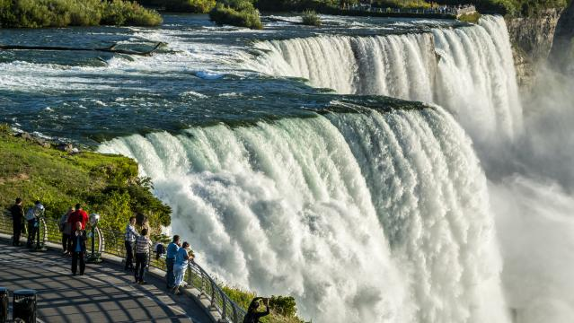

HOME
1.Niagara falls

Niagara Falls, waterfall on the Niagara River in northeastern North America,
one of the continent’s most famous spectacles.
The falls lie on the border between Ontario, Canada, and New York state,
U.S. For many decades the falls were an
attraction for honeymooners and for
such stunts as walking over the falls on a tightrope or going over them in a barrel.
Increasingly, however, the appeal of the site has become its beauty and uniqueness as
a physical phenomenon.
2.Northern lights in norway
Between late September and late March, Northern Norway is dark from early afternoon
until late morning, and the northern lights frequently soar across the sky.
Our bold claim is that this part of Norway, with its multiple islands, deep fjords and
steep mountains,
is among the worlds most beautiful and interesting places to see the northern lights.